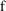
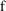
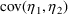
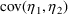

NONMEM Users Guide Part V - Introductory Guide - Chapter 10
1. What This Chapter is About
2. NONMEM Describes its Inputs
3. PREDPP Describes Its Inputs
4. Diagnostic Output from the Estimation Step
4.1. Intermediate Output from the Estimation Step
4.2. Summary Output from the Estimation Step
5. Minimum Value of the Objective Function and FinalParameter Estimates
6. Output from the Covariance Step
7. Additional Output: Tables and Scatterplots
7.1. Output from the Table Step
7.2. Output from the Scatterplot Step
NONMEM Users Guide Part V - Introductory Guide - Chapter 10
Chapter 10 -
Reading the Output
1. What This Chapter is About
This chapter describes
NONMEM’s output in detail. Each page of a
NONMEM-PREDPP output file is shown and
discussed.
The input file to NM-TRAN
is that of figure 2.12, which is reproduced here as figure
10.1 for convenience.
1 $PROBLEM PHENOBARB WITH WEIGHT IN MODELS FOR CL AND V
2 $INPUT ID TIME AMT WT APGR DV
3 $DATA INDATA
4 $SUBROUTINE ADVAN1
5 $PK
6 TVCL=THETA(1)+THETA(3)*WT
7 CL=TVCL+ETA(1)
8 TVVD=THETA(2)+THETA(4)*WT
9 V=TVVD+ETA(2)
10 ; THE FOLLOWING ARE REQUIRED BY PREDPP
11 K=CL/V
12 S1=V
13 $ERROR
14 Y=F+ERR(1)
15 $THETA (0,.0027) (0,.70) .0018 .5
16 $OMEGA .000007, .3
17 $SIGMA 8
18 $ESTIMATION PRINT=5
19 $COVARIANCE
20 $TABLE ID TIME AMT WT APGR DV
21 $SCATTER PRED VS DV UNIT
22 $SCATTER RES VS WT
Figure 10.1. The
NM-TRAN input file (same as figure 2.12). The line numbers
on the left are not actually part of the
file.
2. NONMEM Describes its Inputs
The first page of
NONMEM’s output is shown in figure 10.2. In this page,
NONMEM repeats ("echos") the instructions it was
given in the control file and describes the data file. The
first page of the output should be checked carefully.
Problems in a NONMEM run can often be traced to errors in
the problem specification. For example, always check that
the initial parameter estimates were entered
correctly.
1 NONLINEAR MIXED EFFECTS MODEL PROGRAM (NONMEM) DOUBLE PRECISION NONMEM VERSION IV LEVEL 1.0
2 DEVELOPED AND PROGRAMMED BY STUART BEAL AND LEWIS SHEINER
3
4 PROBLEM NO. 1
5 PHENOBARB WITH WEIGHT IN MODELS FOR CL AND V
6
7 DATA CHECKOUT RUN: NO
8 DATA SET LOCATED ON UNIT NO.: 2
9 THIS UNIT TO BE REWOUND: NO
10 NO. OF DATA RECS IN DATA SET: 744
11 NO. OF DATA ITEMS IN DATA SET: 8
12 ID DATA ITEM IS DATA ITEM NO.: 1
13 DEP VARIABLE IS DATA ITEM NO.: 6
14 MDV DATA ITEM IS DATA ITEM NO.: 8
15
16 INDICES PASSED TO SUBROUTINE PRED ARE:
17 7 2 3 0 0 0 0 0 0
18 0 0
19
20 LABELS FOR DATA ITEMS ARE:
21 ID TIME AMT WT APGR DV EVID MDV
22
23 FORMAT FOR DATA IS:
24 (6E6.0,2F2.0)
25
26 TOT. NO. OF OBS RECS: 155
27 TOT. NO. OF INDIVIDUALS: 59
28
29 LENGTH OF THETA: 4
30
31 OMEGA HAS SIMPLE DIAGONAL FORM WITH DIMENSION: 2
32
33 SIGMA HAS SIMPLE DIAGONAL FORM WITH DIMENSION: 1
34
35 INITIAL ESTIMATE OF THETA:
36 LOWER BOUND INITIAL EST UPPER BOUND
37 0.0000E+00 0.2700E-02 0.1000E+07
38 0.0000E+00 0.7000E+00 0.1000E+07
39 -0.1000E+07 0.1800E-02 0.1000E+07
40 -0.1000E+07 0.5000E+00 0.1000E+07
41
42 INITIAL ESTIMATE OF OMEGA:
43 0.7000E-05
44 0.0000E+00 0.3000E+00
45
46 INITIAL ESTIMATE OF SIGMA:
47 0.8000E+01
48
49 ESTIMATION STEP OMITTED: NO
50 NO. OF FUNCT. EVALS. ALLOWED: 360
51 NO. OF SIG. FIGURES REQUIRED: 3
52 INTERMEDIATE PRINTOUT: YES
53 MSF OUTPUT: NO
54
55 COVARIANCE STEP OMITTED: NO
56 EIGENVLS. PRINTED: NO
57 SPECIAL COMPUTATION: NO
58
59 TABLES STEP OMITTED: NO
60 NO. OF TABLES: 1
61 TABLES PRINTED: YES
62
63 USER-CHOSEN DATA ITEMS FOR TABLE 1,
64 IN THE ORDER THEY WILL APPEAR IN THE TABLE, ARE:
65 ID TIME AMT WT APGR
66
67 SCATTERPLOT STEP OMITTED: NO
68 NO. OF PAIRS OF ITEMS GENERATING
69 FAMILIES OF SCATTERPLOTS: 2
70
71 ITEMS TO BE SCATTERED ARE: DV PRED
72 UNIT SLOPE LINE INCLUDED
73 ITEMS TO BE SCATTERED ARE: WT RES
Figure 10.2. The
first page of the output report. The line numbers on the
left are not actually part of the
report.
Line 5 is an
identification line for the output report. The contents of
the $PROBLEM record are shown here.
Line 7 indicates that
this is not a data checkout run. (Data checkout mode is
discussed in Chapter 12 Section 4.10.) Lines 8 through 27
describe the input data file. Lines 10 and 11 describe the
numbers of rows and columns in the input file, as shown in
figure 6.1. Specifically, line 10 shows how many data
records were read according to the FORTRAN format
specification given in line 24. (Records that are dropped by
the Data Preprocessor (nm6) using
$DATA...IGNORE=... are never read by NONMEM,
hence cannot be included in line 10.) With NONMEM 7.5, line
10 also does not include records that were read by NONMEM
but dropped by PRED using the PRED_IGNORE_DATA variable.
Line 11 describes the number of data items per record, which
is the number of data items listed in the $INPUT record,
less any that were dropped by the Data Preprocessor, plus
any that it added (see Chapter 6). Lines 12, 13, and 14
describe the locations of those data items of interest to
NONMEM itself (i.e. NONMEM data items). Lines 16 through 18
are discussed in Section 3. Line 21 gives the labels for all
the data items. The first six labels are those of the data
items specified in the $INPUT record and the next two (EVID,
MDV) are those of two data items added to the data set by
the Data Preprocessor. (NONMEM itself supplies labels PRED,
RES, and WRES for the prediction, residual, and weighted
residual data items.) In the terminology of Chapter 4 (e.g.
(4.15a)), ID, TIME, AMT, WT, and APGR are the elements of
 ; DV is
; DV is
 ; PRED is

(evaluated for the typical individual in the population).
Line 24 shows the format used to read each data record. In
this example, the format was generated by the Data
Preprocessor and describes the data file after processing by
the Data Preprocessor.†
; PRED is

(evaluated for the typical individual in the population).
Line 24 shows the format used to read each data record. In
this example, the format was generated by the Data
Preprocessor and describes the data file after processing by
the Data Preprocessor.†
----------
† When a
format specification is supplied on the $DATA record, and no
data items are dropped or added by the Data Preprocessor,
the original format specification is used unchanged and
appears here.
----------
Line 26 gives the number
of observation records. Line 27 gives the number of
individual records; that is, one less than the number of
times that the ID data item changed value.
With NONMEM 7.5, Lines 26 and 27 do not include records that
were read by NONMEM but dropped by PRED using the
PRED_IGNORE_DATA variable.
Lines 29 through 47
describe the contents of the $THETA, $OMEGA and $SIGMA
records. First, the number of elements of
 ,
,
 and
and
 are given (lines 29, 31 and 33), then their initial
estimates are displayed. In lines 38-41, notice the values
0.1000e+07 and -0.1000e+07. These are NONMEM’s way of
expressing the values
are given (lines 29, 31 and 33), then their initial
estimates are displayed. In lines 38-41, notice the values
0.1000e+07 and -0.1000e+07. These are NONMEM’s way of
expressing the values
 and
and
 ; i.e., of describing
; i.e., of describing
 s which are unbounded on one or both sides. Another FORTRAN
system may display these numbers differently (e.g.,
1.0000e+06), but the absolute value will always be
1,000,000. In lines 43 and 44, notice that the variances
from the $OMEGA record appear along the diagonal of the
s which are unbounded on one or both sides. Another FORTRAN
system may display these numbers differently (e.g.,
1.0000e+06), but the absolute value will always be
1,000,000. In lines 43 and 44, notice that the variances
from the $OMEGA record appear along the diagonal of the
 matrix, and that the off-diagonal element

is zero. Line 31 states that NONMEM understands
matrix, and that the off-diagonal element

is zero. Line 31 states that NONMEM understands
 to be diagonal; the off-diagonal element(s) are
automatically fixed at zero.
to be diagonal; the off-diagonal element(s) are
automatically fixed at zero.
The remaining lines of
figure 10.2 describe the tasks that NONMEM will perform.
Lines 49 through 53 describe the $ESTIMATION record. Lines
50 through 53 show the defaults (set by NM-TRAN) for various
options, all of which could have been specified explicitly
on the $ESTIMATION record. In line 50 for example, NONMEM
displays the maximum number of times it will evaluate the
objective function during the Estimation Step (this number
can be slightly exceeded). The value 360 was supplied by
NM-TRAN. It is a function of the sizes of
 ,
,
 , and
, and
 . Line 51 displays the desired number of significant digits
in the final parameter estimate; the value 3 is the default
number requested by NM-TRAN.
. Line 51 displays the desired number of significant digits
in the final parameter estimate; the value 3 is the default
number requested by NM-TRAN.
Lines 55 through 59
describe the $COVARIANCE record, giving the default options
chosen by NM-TRAN.
Lines 59 through 61
describe the $TABLE record. Lines 67 through 73 describe the
$SCATTERPLOT records.
3. PREDPP Describes Its Inputs
The next two pages are
produced by PREDPP and will not appear if $PRED statements
(or a user-written PRED subroutine) are used. PREDPP uses
these pages to repeat ("echo") the instructions it
was given in the control file, and to identify the ADVAN and
TRANS routines chosen by the user. The first page of
PREDPP’s output is shown in figure 10.3.
1 DOUBLE PRECISION PRED VERSION III LEVEL 1.0
2
3 ONE COMPARTMENT MODEL (ADVAN1)
4
5 MAXIMUM NO. OF BASIC PK PARAMETERS: 2
6
7 BASIC PK PARAMETERS (AFTER TRANSLATION):
8 ELIMINATION RATE (K) IS BASIC PK PARAMETER NO.: 1
9
10
11 COMPARTMENT ATTRIBUTES
12 COMPT. NO. FUNCTION INITIAL ON/OFF DOSE DEFAULT DEFAULT
13 STATUS ALLOWED ALLOWED FOR DOSE FOR OBS.
14 1 CENTRAL ON NO YES YES YES
15 2 OUTPUT OFF YES NO NO NO
Figure 10.3. The
first page of PREDPP’s output. The line numbers on the
left are not actually part of the
report.
In its first page of
output, PREDPP describes the features of the pharmacokinetic
model and its parameterization encoded into the ADVAN and
TRANS routines specified on the $SUBROUTINE record. The
information displayed here includes the kind of information
summarized in Appendices 1 and 2. In the particular output
of Figure 10.3 no information concerning an alternate
parameterization appears because TRANS1 was specified. The
information concerning basic parameters and compartments is
displayed in a format similar to that used in NONMEM Users
Guide, Part VI, which is the complete reference for
PREDPP.
Lines 5 and 8 describe
the basic PK parameters, which in this example is the single
microconstant K. If a translator other than TRANS1 had been
requested, an additional line would appear describing the
translation. E.g., with TRANS2, this line would read:
TRANSLATOR WILL CONVERT PARAMETERS CLEARANCE (CL) AND VOLUME
(V) to K
Lines 10 through 14
describe the compartment attributes. Even though the output
compartment is never turned on by the data of this example,
its attributes are described here because it is part of the
model.
The information presented
so far describes the model for computing drug amounts. For a
given choice of ADVAN and TRANS, the contents of this page
are completely fixed. PREDPP’s second page of output
describes user choices related to the given ADVAN routine,
including choices for the scale parameters (and thus, to the
model for computing concentrations). This page is shown in
figure 10.4.
1 ADDITIONAL PK PARAMETERS - ASSIGNMENT OF ROWS IN GG
2 COMPT. NO. INDICES
3 SCALE BIOAVAIL. ZERO-ORDER ZERO-ORDER ABSORB
4 FRACTION RATE DURATION LAG
5 1 3 * * * *
6 2 * - - - -
7 - PARAMETER IS NOT ALLOWED FOR THIS MODEL
8 * PARAMETER IS NOT SUPPLIED BY PK SUBROUTINE;
9 WILL DEFAULT TO ONE IF APPLICABLE
10
11 DATA ITEM INDICES USED BY PRED ARE:
12 EVENT ID DATA ITEM IS DATA ITEM NO.: 7
13 TIME DATA ITEM IS DATA ITEM NO.: 2
14 DOSE AMOUNT DATA ITEM IS DATA ITEM NO.: 3
15
16
17 PK SUBROUTINE CALLED WITH EVERY EVENT RECORD.
18 PK SUBROUTINE NOT CALLED AT ADDITIONAL DOSE OR LAGGED DOSE TIMES.
19
20 DURING SIMULATION, ERROR SUBROUTINE CALLED WITH EVERY EVENT RECORD.
21 OTHERWISE, ERROR SUBROUTINE CALLED ONCE IN THIS PROBLEM.
Figure 10.4. The
second page of PREDPP’s output. The line numbers on
the left are not actually part of the
report.
Lines 2 through 9
describe the additional PK parameters that are computed by
the $PK statements (or PK subroutine). In line 5, the
position marked with "3" corresponds to the scale
parameter for compartment number 1. Thus, we know that the
$PK statements contained an assignment statement for S1.
From the prior page we can see that compartment number 1 is
the central compartment. The value "3" is a row
number within GG, an array used for communication between
PREDPP and the PK subroutine. With the use of NM-TRAN and
$PK statements, row numbers are of no interest to the user.
With a user-written PK subroutine, it is important to check
their correctness. Positions marked with "*"
correspond to additional PK parameters that are allowed by
the model but that are not assigned a value by $PK
statements; an example is F1, the bioavailability fraction
for compartment 1. Positions marked with "-"
correspond to additional parameters that may not be
computed; for instance, dose-related parameters are not
allowed for the output compartment, because (as shown on the
preceding page) this compartment cannot receive
doses.
Lines 11 through 14
describe the locations in the input data record of those
data items of interest to PREDPP (PREDPP data items).
(NM-TRAN causes the locations of these data items in the
data set to be passed by NONMEM to PREDPP, as indicated in
lines 15 through 17 of figure 10.2. NONMEM is not concerned
with the significance of these data items.) Note that data
item 7, Event ID, was appended by the Data
Preprocessor.
Line 17 reflects the fact
that, by default, $PK statements are evaluated with every
event record†. Lagged and additional doses are
discussed in Chapter 12, Sections 2.4 and 2.5. They are not
used in this example.
----------
† In this
example, the $PK statements (lines 5 through 12 of the input
file, figure 10.1) involve only WT, which is constant for
each individual. It is possible to limit the event records
with which the $PK statements are evaluated to the first
event record of each individual, in order to reduce run
time. This decision is left to the user.
----------
Line 21 reflects the fact
that the $ERROR statements describe the simple error model
(3.4). This model uses no data items and no elements of
 whatsoever (directly or indirectly). NM-TRAN has instructed
PREDPP that the $ERROR statements need be evaluated only
once at the beginning of the problem. Line 20 indicates
that, should the Simulation Step be implemented, PREDPP will
disregard this limitation and evaluate the $ERROR statements
with every event record, so that randomly-generated values
of intra-individual error can be applied at every
observation event. (This example does not involve
simulation, but the PK and ERROR routines which implement
the $PK and $ERROR statements are capable of supporting all
NONMEM tasks, including simulation.)
whatsoever (directly or indirectly). NM-TRAN has instructed
PREDPP that the $ERROR statements need be evaluated only
once at the beginning of the problem. Line 20 indicates
that, should the Simulation Step be implemented, PREDPP will
disregard this limitation and evaluate the $ERROR statements
with every event record, so that randomly-generated values
of intra-individual error can be applied at every
observation event. (This example does not involve
simulation, but the PK and ERROR routines which implement
the $PK and $ERROR statements are capable of supporting all
NONMEM tasks, including simulation.)
Finally, note that the
$PK and $ERROR models (figure 10.1, lines 5-14) are not
documented in the NONMEM-PREDPP output. It is a good idea to
attach a printed copy of the NM-TRAN input records to the
corresponding NONMEM output. MS/DOS batch file nmfe73.bat
and Unix C-shell script nmfe73 (supplied with NONMEM) do
this automatically.
4. Diagnostic Output from the Estimation Step
The next page of output,
figure 10.5, is produced during the running of the
Estimation Step.
1 MONITORING OF SEARCH:
2
3
4 ITERATION NO.: 0 OBJECTIVE VALUE: 0.6757E+03 NO. OF FUNC. EVALS.: 8
5 CUMULATIVE NO. OF FUNC. EVALS.: 8
6 PARAMETER: 0.1000E+00 0.1000E+00 0.1000E+00 0.1000E+00 0.1000E+00 0.1000E+00 0.1000E+00
7 GRADIENT: -0.7986E+03 -0.1594E+04 -0.4294E+03 -0.1000E+04 0.1542E+03 0.5269E+03 0.9128E+02
8
9 ITERATION NO.: 5 OBJECTIVE VALUE: 0.6502E+03 NO. OF FUNC. EVALS.:10
10 CUMULATIVE NO. OF FUNC. EVALS.: 58
11 PARAMETER: 0.8878E-01 0.1003E+00 0.2055E+00 0.1296E+00 0.6695E-01 0.7822E-01 0.1071E+00
12 GRADIENT: 0.1060E+04 0.2567E+04 0.3675E+03 0.8472E+03 -0.1807E+03 -0.5093E+03 0.9841E+02
13
14 ITERATION NO.: 10 OBJECTIVE VALUE: 0.6153E+03 NO. OF FUNC. EVALS.: 9
15 CUMULATIVE NO. OF FUNC. EVALS.: 107
16 PARAMETER: 0.5008E-01 0.6626E-01 0.2425E+00 0.1663E+00 -0.6718E-01 0.6382E-01 0.1004E+00
17 GRADIENT: 0.9732E+02 0.3034E+03 0.3185E+02 0.1228E+03 -0.1162E+03 0.1252E+03 0.6450E+02
18
19 ITERATION NO.: 15 OBJECTIVE VALUE: 0.6108E+03 NO. OF FUNC. EVALS.: 9
20 CUMULATIVE NO. OF FUNC. EVALS.: 152
21 PARAMETER: 0.4235E-01 0.4508E-01 0.2462E+00 0.1831E+00 -0.5721E-01 0.5237E-01 0.1008E+00
22 GRADIENT: 0.3989E+02 0.7394E+02 -0.1782E+01 0.8527E+02 -0.9309E+02 0.1867E+02 -0.1773E+02
23
24 ITERATION NO.: 20 OBJECTIVE VALUE: 0.6095E+03 NO. OF FUNC. EVALS.: 9
25 CUMULATIVE NO. OF FUNC. EVALS.: 197
26 PARAMETER: 0.1927E-01 0.3153E-01 0.2615E+00 0.1898E+00 -0.4458E-01 0.4904E-01 0.1047E+00
27 GRADIENT: 0.1609E+02 -0.3621E+02 0.5228E+01 0.9614E+00 -0.1740E+02 0.1329E+02 0.3111E+01
28
29 ITERATION NO.: 25 OBJECTIVE VALUE: 0.6091E+03 NO. OF FUNC. EVALS.: 9
30 CUMULATIVE NO. OF FUNC. EVALS.: 242
31 PARAMETER: 0.2389E-02 0.4171E-01 0.2652E+00 0.1833E+00 -0.4413E-01 0.4998E-01 0.1043E+00
32 GRADIENT: 0.2273E+01 -0.5333E+01 0.3914E+01 -0.5397E+01 0.1271E+01 0.2610E+01 0.3584E+00
33
34 ITERATION NO.: 30 OBJECTIVE VALUE: 0.6091E+03 NO. OF FUNC. EVALS.:16
35 CUMULATIVE NO. OF FUNC. EVALS.: 299
36 PARAMETER: -0.1278E-03 0.4166E-01 0.2650E+00 0.1835E+00 -0.4414E-01 0.5003E-01 0.1043E+00
37 GRADIENT: -0.1120E+00 -0.9411E+00 -0.3719E+00 -0.2540E+01 -0.5135E-01 0.1420E+00 -0.9524E-01
38
39 ITERATION NO.: 32 OBJECTIVE VALUE: 0.6091E+03 NO. OF FUNC. EVALS.: 0
40 CUMULATIVE NO. OF FUNC. EVALS.: 315
41 PARAMETER: -0.7284E-05 0.4150E-01 0.2650E+00 0.1836E+00 -0.4411E-01 0.5003E-01 0.1043E+00
42 GRADIENT: -0.6416E-02 0.9336E-01 0.4548E-01 0.4826E-01 0.1263E-02 0.9652E-01 0.4629E-01
43
44 MINIMIZATION SUCCESSFUL
45 NO. OF FUNCTION EVALUATIONS USED: 315
46 NO. OF SIG. DIGITS IN FINAL EST.: 3.9
Figure 10.5. The
output from the Estimation Step. The line numbers on the
left are not actually part of the
report.
4.1. Intermediate Output from the Estimation Step
Lines 1 through 42 are
referred to as the intermediate output. Lines 4 through 7
give numbers summarizing the 0-th iteration, which are based
on the initial parameter estimates. Line 4 shows the initial
value of the objective function. The value following
"NO. OF FUNC. EVALS." is the number of objective
function evaluations which were needed during the iteration.
Line 5 gives the cumulative number of function evaluations
including this and all prior iteration summaries.
Line 6 gives the unconstrained parameter (UCP)
estimates. The search is carried out in a different
parameter space. The parameters are transformed to
unconstrained parameters (UCP). In the transformation
process a scaling occurs so that the initial estimate of
each of the UCP is 0.1. Thus, in line 6, all parameters are
.1 at the 0-th iteration. Parameters are printed in the
following order: elements of
 , elements of
, elements of
 , elements of
, elements of
 . In this example, reading from left to right, the
parameters are
. In this example, reading from left to right, the
parameters are
 ,
,
 ,
,
 ,
,
 ,
,
, and
.
,
,
, and
.
Two points should be
noted. First, fixed parameters do not appear in the list.
Therefore, the off-diagonal element
, which is effectively fixed to 0, does not appear. Second,
when off-diagonal elements of
 are being estimated, then as many additional UCP’s
appear as there are off-diagonal elements of
are being estimated, then as many additional UCP’s
appear as there are off-diagonal elements of
 being estimated. However, a 1-1 correspondence between each
of the elements of
being estimated. However, a 1-1 correspondence between each
of the elements of
 and an UCP does not exist. The same is true for elements of
and an UCP does not exist. The same is true for elements of
 and the UCP’s for
and the UCP’s for
 when off-diagonal elements of
when off-diagonal elements of
 are estimated.
are estimated.
With NONMEM 7, the
parameter estimates are also displayed in their natural
(unscaled) space. These lines are identified as NPARAMETR
and precede the PARAMETER lines, which display the UCP
values.
Line 7 shows the gradient
for each parameter, which may be thought of as the partial
derivative of the objective function with respect to that
parameter.
The Estimation Step
proceeds in a series of stages called iterations. In this
example, intermediate printout is produced for each of every
5 iterations, as well as for the 0-th and final iterations,
for which intermediate printout is always printed by
default. This printout consists of the same four lines as
for the 0-th iteration, but using the parameters estimates
obtained at the end of the iteration.
In lines 4, 9, 14, 19,
24, 29, 34, and 39, observe that the objective function
drops quickly at first, and then more slowly. After
iteration number 25, there is no change above the fourth
significant digit.
In lines 6, 11, 16, 21,
26, 31, 36, and 41, observe that each parameter also changes
rapidly at first and then more slowly as it converges to its
final value. (The first parameter,
 , is an exception. It is clearly approaching a very small
value close to its lower bound, 0. In Chapter 12, we shall
see that both
, is an exception. It is clearly approaching a very small
value close to its lower bound, 0. In Chapter 12, we shall
see that both
 and
and
 are best fixed at 0.)
are best fixed at 0.)
Finally, in lines 7, 12,
17, 22, 27, 32, 37, and 42, observe that the gradients also
approach 0, another sign that a minimum of the objective
function has been located.
The values computed for
the gradients are very sensitive to differences in computer
arithmetic and precision. If a given NONMEM run is repeated
on a different computer, or on the same computer with
different machine precision or a different FORTRAN compiler,
it is likely that the gradients will be different. This will
cause the search to follow a different path to the minimum,
so that lines 4 through 42 may be quite different. However,
each final estimate of a UCP should always be the same to
the number of requested significant digits. (Minor
differences may also be observed in the output of the
Covariance Step, below; this output is also sensitive to
computational differences.)
4.2. Summary Output from the Estimation Step
Lines 44, 45 and 46 are
always printed, even when intermediate printout is
suppressed. Line 44, "MINIMIZATION SUCCESSFUL",
signifies that the search appears to have located a minimum
of the objective function. Before one can be certain that a
minimum has been located, or one which corresponds to a
reasonable parameter estimate (there can be a number of
"local minima"), the final parameter estimates
must be examined in their (untransformed) state; see Section
5 below. The Estimation Step is not always successful.
Chapter 13 discusses two other messages that sometimes
appear instead of line 44.
In line 45, note that the
number of function evaluations used, 315, is a total value
and includes all iterations (not just those for which
intermediate printout was displayed). This is under the
limit of 360 supplied by NM-TRAN (figure 10.2, line
57).
The number of significant
digits in the final estimate is given in line 34 as 3.9.
This can be interpreted as meaning that no (transformed)
parameter estimate is actually determined to less
than 3.9 significant digits. More specifically, when the UCP
estimates were compared between the last two iterations,
none differed in the first (almost) 4 significant figures
including leading zeros after the decimal point. Note
that the final
UCP estimate is -0.7284E-05, and so the 7284 are not
significant digits at all! Because NONMEM displays only 3
significant digits in the printed parameter estimates, and
for other reasons as well, by default NM-TRAN requests only
3 significant digits. However, more significance can be
requested, as was discussed in Chapter 9, Section
4.1.
5. Minimum Value of the Objective Function and FinalParameter Estimates
The next two pages in the
NONMEM output are produced whether or not the Estimation
Step was implemented and, if it was, whether or not the
search terminated successfully. They give the values of the
objective function and the parameter estimates, using the
final parameter estimates if the Estimation Step was
implemented (whether or not the search terminated
successfully), and using the initial parameter estimates
otherwise. These pages have already been shown in Chapter 2,
figure 2.13. Even when the minimization routine is
successful in locating a minimum of the objective function,
the final (untransformed) parameter estimates must be
carefully checked. Is any parameter’s final estimate
physiologically unreasonable? Is any parameter’s final
estimate near its upper or lower constraint? If either
answer is yes, the model, the constraints on
 ’s, or the data may be incorrect; see Chapter
11.
’s, or the data may be incorrect; see Chapter
11.
Sometimes the final
estimates do not match anticipated values, e.g., values
obtained by some other system of analysis. Additional
refinement of the model may be needed, as discussed in
Chapter 11. However, the discrepancy may well be traceable
to an error in model specification, such as an error in
specifying a compartment’s scale. Along with the
Estimation Step, it is important to obtain a scatterplot of
PRED vs DV and make sure the unit slope line is visible. See
Chapter 13, Section 4.4.
6. Output from the Covariance Step
Figures 10.6 through 10.7
show the output of the Covariance Step, which was requested
via the $COVARIANCE record. Figure 10.6 has already been
displayed as figure 2.14, but is included here for
completeness. This page displays the standard errors of the
parameter estimates. Standard errors are discussed
extensively in Chapters 5 and 11. A detailed discussion of
the remaining three pages, containing the covariance,
correlation, and inverse covariance matrices, is beyond the
scope of this text. Note, however, the use of the notation
"........". Each sequence of dots denotes a value
(such as the standard error in the estimate of
) that is 0 by definition, rather than due to a
computation.
1 ************************************************************************************************************************
2 ******************** ********************
3 ******************** STANDARD ERROR OF ESTIMATE ********************
4 ******************** ********************
5 ************************************************************************************************************************
6
7
8
9 THETA - VECTOR OF FIXED EFFECTS *********************
10
11
12 TH 1 TH 2 TH 3 TH 4
13
14 9.49E-11 1.46E-01 2.24E-04 1.13E-01
15
16
17
18 OMEGA - COV MATRIX FOR RANDOM EFFECTS - ETAS ********
19
20
21 ETA1 ETA2
22
23 ETA1 7.24E-07
24
25 ETA2 ......... 3.63E-02
26
27
28
29 SIGMA - COV MATRIX FOR RANDOM EFFECTS - EPSILONS ****
30
31
32 EPS1
33
34 EPS1 1.71E+00
Figure 10.6.
Standard error of the estimate. The line numbers on the left
are not actually part of the report.
1 ************************************************************************************************************************
2 ******************** ********************
3 ******************** COVARIANCE MATRIX OF ESTIMATE ********************
4 ******************** ********************
5 ************************************************************************************************************************
6
7
8 TH 1 TH 2 TH 3 TH 4 OM11 OM12 OM22 SG11
9
10 TH 1 9.02E-21
11
12 TH 2 3.93E-12 2.14E-02
13
14 TH 3 -5.23E-15 -1.45E-05 5.00E-08
15
16 TH 4 -3.69E-12 -1.57E-02 1.04E-05 1.27E-02
17
18 OM11 -1.11E-17 2.13E-08 -6.39E-12 -1.52E-08 5.24E-13
19
20 OM12 ......... ......... ......... ......... ......... .........
21
22 OM22 -1.79E-14 4.40E-04 -5.30E-07 5.58E-04 6.27E-10 ......... 1.32E-03
23
24 SG11 1.04E-11 -5.69E-02 1.12E-04 4.45E-02 -3.74E-07 ......... -1.03E-02 2.92E+00
Figure 10.7.
Covariance matrix of the estimate. The line numbers on the
left are not actually part of the
report.
1 ************************************************************************************************************************
2 ******************** ********************
3 ******************** CORRELATION MATRIX OF ESTIMATE ********************
4 ******************** ********************
5 ************************************************************************************************************************
6
7
8 TH 1 TH 2 TH 3 TH 4 OM11 OM12 OM22 SG11
9
10 TH 1 1.00E+00
11
12 TH 2 2.83E-01 1.00E+00
13
14 TH 3 -2.46E-01 -4.44E-01 1.00E+00
15
16 TH 4 -3.45E-01 -9.53E-01 4.13E-01 1.00E+00
17
18 OM11 -1.61E-01 2.01E-01 -3.95E-02 -1.86E-01 1.00E+00
19
20 OM12 ......... ......... ......... ......... ......... .........
21
22 OM22 -5.21E-03 8.29E-02 -6.53E-02 1.37E-01 2.39E-02 ......... 1.00E+00
23
24 SG11 6.44E-02 -2.28E-01 2.94E-01 2.31E-01 -3.02E-01 ......... -1.66E-01 1.00E+00
Figure 10.8.
Correlation matrix of the estimate. The line numbers on the
left are not actually part of the
report.
1 ************************************************************************************************************************
2 ******************** ********************
3 ******************** INVERSE COVARIANCE MATRIX OF ESTIMATE ********************
4 ******************** ********************
5 ************************************************************************************************************************
6
7
8 TH 1 TH 2 TH 3 TH 4 OM11 OM12 OM22 SG11
9
10 TH 1 1.56E+20
11
12 TH 2 1.46E+11 1.25E+03
13
14 TH 3 1.35E+13 4.42E+04 2.80E+07
15
16 TH 4 2.32E+11 1.63E+03 3.98E+04 2.23E+03
17
18 OM11 3.04E+15 -3.96E+06 -7.46E+08 -1.76E+06 2.26E+12
19
20 OM12 ......... ......... ......... ......... ......... .........
21
22 OM22 -1.56E+11 -1.14E+03 -2.82E+04 -1.55E+03 2.82E+06 ......... 1.86E+03
23
24 SG11 -1.93E+09 -7.14E+00 -1.06E+03 -1.03E+01 2.67E+05 ......... 9.91E+00 4.78E-01
Figure 10.9.
Inverse covariance matrix of the estimate. The line numbers
on the left are not actually part of the
report.
7. Additional Output: Tables and Scatterplots
The use of $TABLE and
$SCATTERPLOT records to request tables and scatterplots is
discussed in Chapter 9.
7.1. Output from the Table Step
The first 12 lines of the
table produced by the $TABLE record are shown in figure
10.10. This is the data for the first
individual.
1 TABLE NO. 1
2
3
4
5 LINE NO. ID TIME AMT WT APGR DV PRED RES WRES
6
7 1 1.00E+00 0.00E+00 2.50E+01 1.40E+00 7.00E+00 0.00E+00 1.78E+01 0.00E+00 0.00E+00
8
9 2 1.00E+00 2.00E+00 0.00E+00 1.40E+00 7.00E+00 1.73E+01 1.76E+01 -3.14E-01 -2.92E-01
10
11 3 1.00E+00 1.25E+01 3.50E+00 1.40E+00 7.00E+00 0.00E+00 1.92E+01 0.00E+00 0.00E+00
12
13 4 1.00E+00 2.45E+01 3.50E+00 1.40E+00 7.00E+00 0.00E+00 2.07E+01 0.00E+00 0.00E+00
14
15 5 1.00E+00 3.70E+01 3.50E+00 1.40E+00 7.00E+00 0.00E+00 2.20E+01 0.00E+00 0.00E+00
16
17 6 1.00E+00 4.80E+01 3.50E+00 1.40E+00 7.00E+00 0.00E+00 2.33E+01 0.00E+00 0.00E+00
18
19 7 1.00E+00 6.05E+01 3.50E+00 1.40E+00 7.00E+00 0.00E+00 2.45E+01 0.00E+00 0.00E+00
20
21 8 1.00E+00 7.25E+01 3.50E+00 1.40E+00 7.00E+00 0.00E+00 2.56E+01 0.00E+00 0.00E+00
22
23 9 1.00E+00 8.53E+01 3.50E+00 1.40E+00 7.00E+00 0.00E+00 2.66E+01 0.00E+00 0.00E+00
24
25 10 1.00E+00 9.65E+01 3.50E+00 1.40E+00 7.00E+00 0.00E+00 2.77E+01 0.00E+00 0.00E+00
26
27 11 1.00E+00 1.08E+02 3.50E+00 1.40E+00 7.00E+00 0.00E+00 2.87E+01 0.00E+00 0.00E+00
28
29 12 1.00E+00 1.12E+02 0.00E+00 1.40E+00 7.00E+00 3.10E+01 2.81E+01 2.88E+00 6.88E-01
Figure 10.10. A
portion of a NONMEM table. The line numbers on the left are
not actually part of the report.
Each row in the table
corresponds to a record of the input file, and the rows
appear in the same order as do the corresponding records of
the input data file. Note that the values of RES and WRES
are always shown as zero for non-observation
records†, whereas a (possibly) nonzero value of PRED
is printed for every record.
----------
† Strictly
speaking, RES and WRES are always zero for records having
MDV=1. With PREDPP, this is the same thing.
----------
If there are more than
900 data records, separate tables are produced for groups of
900 records. The last table contains the remaining records.
If the rows of the table are sorted, each group of records
is sorted separately. When the input data file is large, the
table will require many pages to print. Therefore, the
$TABLE record should be omitted unless needed for diagnostic
purposes (such as when initially checking a new data set or
model).
7.2. Output from the Scatterplot Step
Many examples of
scatterplots are present in Chapters 2 and 11. They are not
reproduced here. Whereas all the records in the input data
file correspond to rows of a table, this is not true of a
scatterplot that includes one or more of the items RES,
WRES, and DV. When one of these three is being plotted, then
only observation records contribute points to the
scatterplot†.
----------
† Strictly
speaking, it is only the records having MDV=0 that
contribute points. With PREDPP, this is the same thing.
----------
In figure 2.5, there are
exactly 10 points "*", corresponding to the 10
observation records in figure 2.2; the dose record does not
contribute a point.
NONMEM displays only the
first 900 records of the appropriate type in a scatterplot.
This limit applies before any partitioning. For example, in
a plot of DV VS ID, the first 900 observation records are
displayed; in a plot of WT vs ID, the first 900 records of
the data file are displayed. Additional scatterplots can be
requested, showing additional points, using options
"FROM=" and "TO=" of the $SCATTERPLOT
record. See NONMEM Users Guide, Part IV.
TOP
TABLE OF CONTENTS
NEXT